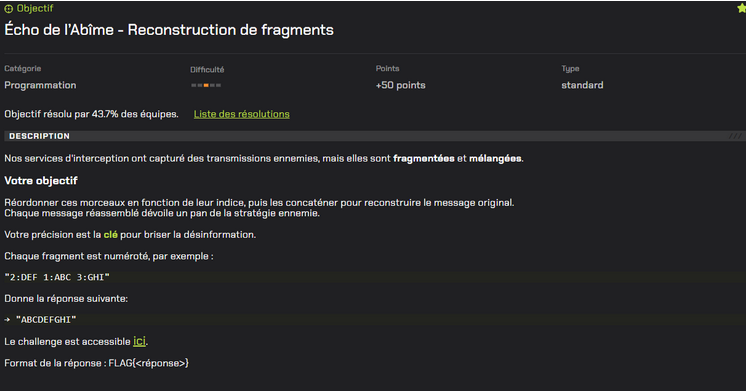
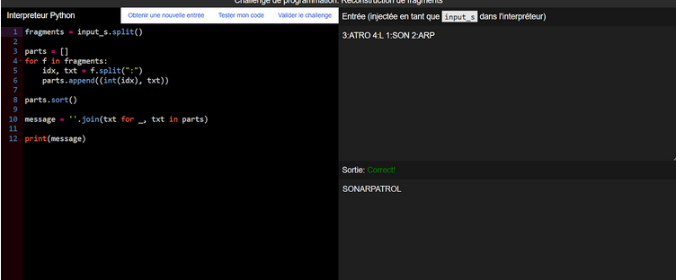

Écho de l’Abîme – Reconstruction de fragments



Démarche de résolution
Enfin, pour Écho de l’Abîme – Reconstruction de fragments, nous avons identifié que le message était composé de fragments numérotés. Nous avons donc écrit un script qui découpe les fragments, les trie selon leur numéro, puis reconstitue le message final.